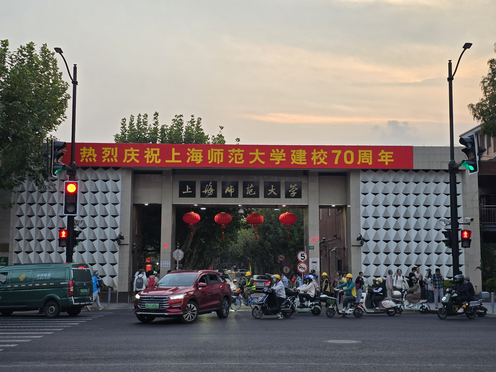
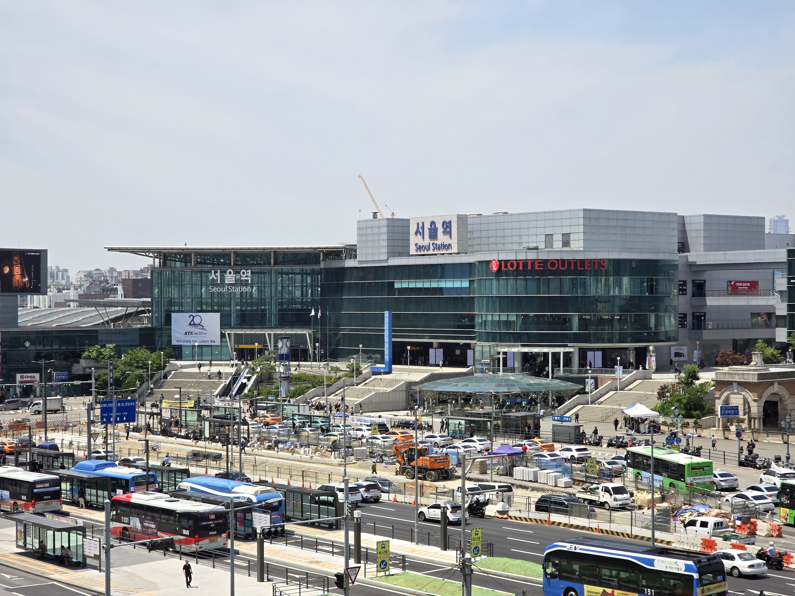
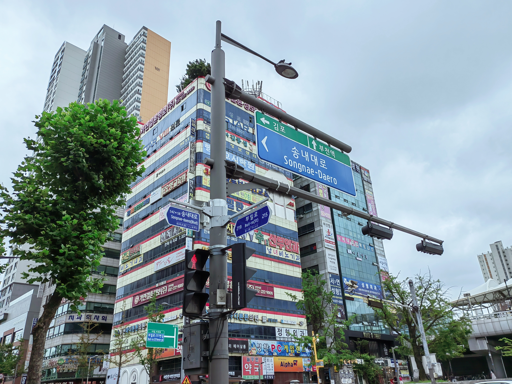
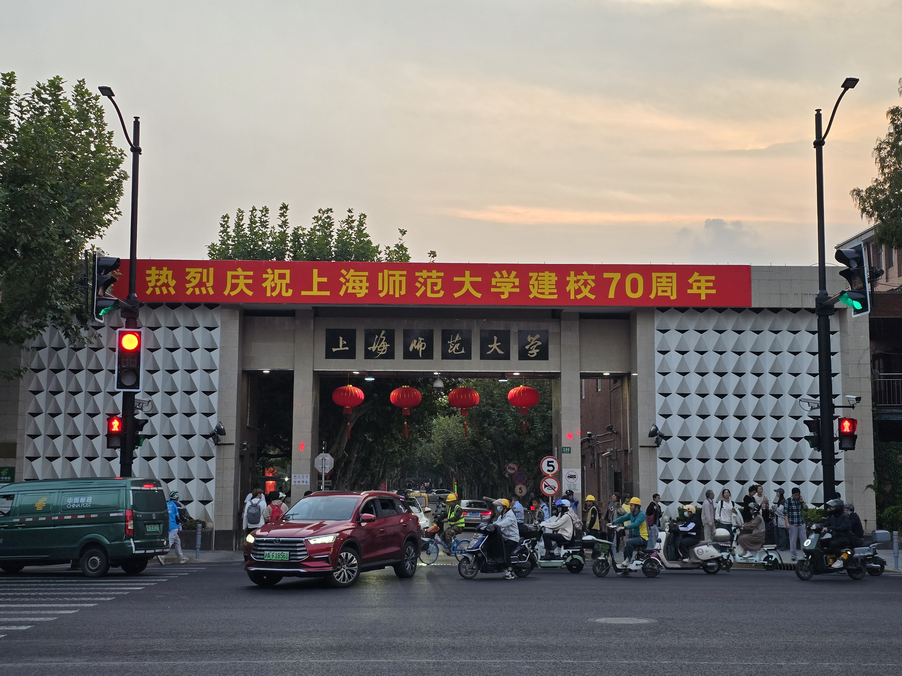
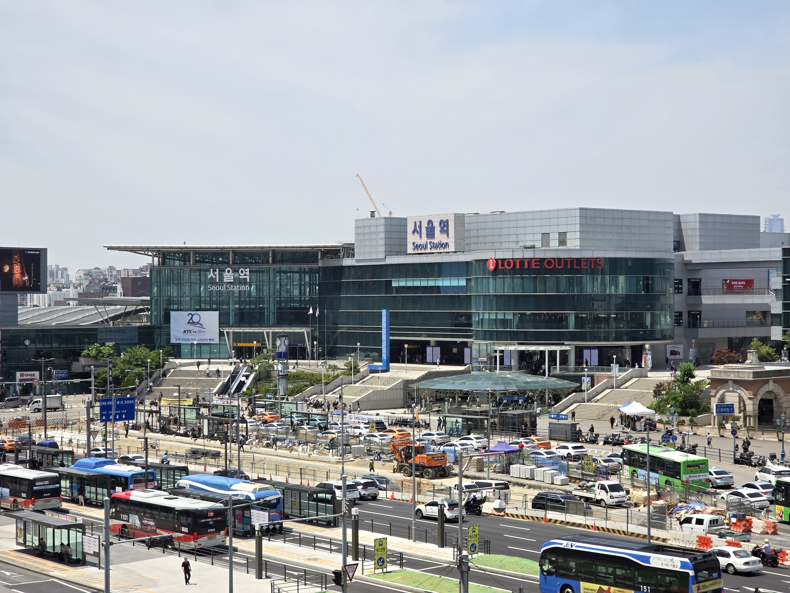
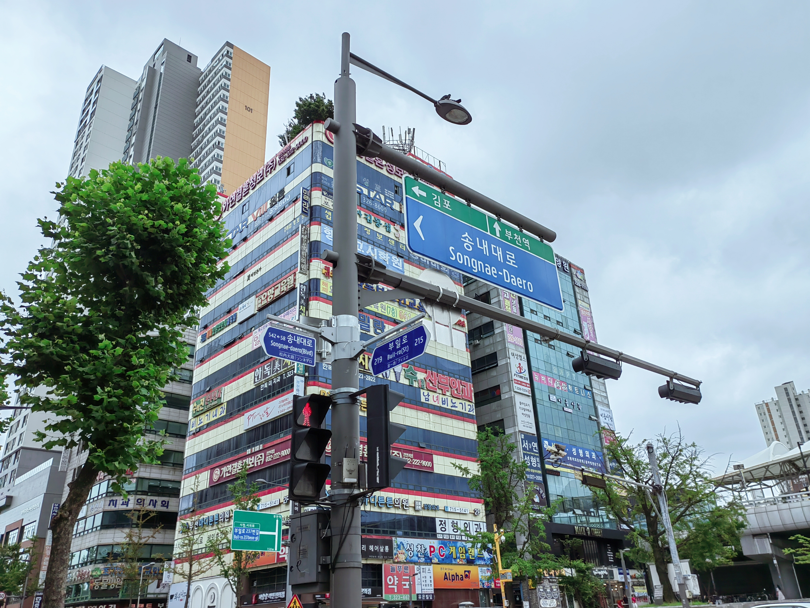

5th Post

Dec
我的2024年度总结碎碎念
昨天，我在日本留学的朋友，同时也是我的合作伙伴，湛钧同学，坐飞机抵达了上海。
昨晚九点多，我去到浦东机场接机，一起吃了饭，今天他又飞去了郑州，去见家人。时隔一年再次见面啊，还挺开心的。再次在浦东机场T2航站楼见面，曾经无数次落地的地方，无数次录制过视频音频素材的地方，每次经过那个扶梯，那个星巴克，那个国际抵达出口，还是满满回忆。
今天大早上五点半起床，六点出发去机场，本想打车赶回学校听早八的高数，但是想了想反正也没啥用，这学期最后一次高数课了，第一次让我朋友帮我点了到，我在机场陪他多吃了会儿饭，聊了会儿天，然后一个人坐地铁来到了上海图书馆学习。
期末周了，每个人都很忙碌，学习压力生活压力都很大……很迷茫，不知所措，越学觉得自己欠缺的越多，不会的越多，感觉自己什么都做不好，感觉我总是被自卑感包裹着，习惯了不断否定自己，也不喜欢听到别人的夸赞，再加上之前的一些经历，让我一度认为所有都是我的错，一度认为别人夸我是反讽我捧杀我，退一万步说，我也不可以沉浸在别人的夸赞中，我知道我距离及格还有很大的一段距离……更别说优秀了……
准备插班生考试，和学长聊完之后更加纠结是要考上大微电子还是华师大的应用物理，纠结自己是选择自己有一点点喜欢然后稍微好就业一点的嵌入式方向，还是选择自己很喜欢的数学老师物理老师这个职业……考上大要学高数和大物，考华师大要学高数和英语，上大的高数是这几个插班生数学里最难的，考华师大的话还要考英语，但是自从考上了中德合作专业，我的英语也是有点松懈，真的很担心我的英语能否和上海考生抗衡……甚至担心英语四级都会考不过。
准备插班生的同时，还要准备转专业，这倒好说，就考高数就准备高数就好了，竞争很大，我也没有抱着100%的信心，成功更好，不成功就当提前准备考研了。还想试试申请大二的交换生，想去韩国的汉阳大学交换，一个是没那么远，而且语言有稍微一点点优势，去了也能提供一个韩语环境，也算是提前体验一下留学生活，感觉也很值，还一个就是可以和我爸妈和我亲戚多一些见面机会吧，汉阳大学的ERICA校区去我爸妈家，一个半小时地铁直达，都不用换乘，听着还挺不错。但是因为我没有语言成绩，所以错过了大一下学期的交换生，但是也还好，那我就申请大二上学期或者下学期的交换吧！报名了2025年2月22日的考试，是第五届TOPIK IBT考试，在韩国的국제대학교考试，2月17日正式开学，开学一周不到，周五就飞首尔，然后周六考试，周日飞会上海，还挺充实的。但是也很紧张，TOPIK2稳过的水平，一下子看TOPIK中高级试卷还是有点蒙圈，很担心能不能考过，又要好好学学校的德语课程，还要抽出时间学习韩语学习TOPIK中高级，说实话确实有点吃力，但是也只能迎难而上加油向前。
总是陷入焦虑，陷入内耗，陷入自责，陷入和他人的比较，总是习惯自卑，我这个人不算好，我也不知道我到底在别人心中到底是怎样一个人，我远达不到及格，可能是我对自己要求高也好，或者我本就不够好，优秀的人太多，竞争的压力太大，前两天有个朋友问我这么努力，肯定不是要打工，是不是要创业，我说实话我没有太远大的理想，也没有底气胸怀大志，我只敢说通过我的努力我可以生活下去，只要自己生活的很好，并且不断进步，不断挑战未知领域，不断有新的收获新的成就就是很好。学习一门新的语言，考下一个新的证书，或者哪怕学习一个数学公式或者一两行代码，对我来说都很满足，很有成就感，但是社会进步太快，更多优秀人才相继涌现，这使得我更加惶恐，但是这也是我前进的一种动力，惶恐也好，畏惧失败也好，迎难而上，正因为畏惧失败，才要更加努力，这才是我们青年时代应该有的青年底色。
这一年来，过得恍恍惚惚，很快就到了圣诞节，又迎来了一年的结束。前半年过得非常漫长，备战高考期间，真正体验到人生第一次，度日如年般的煎熬。三年没上高中，没有参加过考试，对自己成绩的未知，对高考改革的未知，对自己能考上的大学的未知，上半年我的生活被这些种种未知所充斥着，日复一日的刷题，日复一日的套卷，好像那段日子过去了很久，但是又好像闭上眼睛又能回想起当时刷物理套卷刷到两行泪水滴在试卷上的那种崩溃。当时的日子很苦，我也不知道那段时间我是怎么过来的，那三天高考我也一直在抱怨为什么时间过的是这么慢，是让我这么煎熬。还记得走出考场之际，那种释然，那种解脱，或是死到临头那种解脱，或是三年来的压力的瞬间释放。高考前一晚，我还是延续了中考的优良传统，其他同学都在考前紧张复习，我无心复习，我坚信考前越复习越紧张，所以出去逛了一天玩了一天，高考前那一天，才是真正的无忧无虑吧，高考后，更多的是对结果的一种茫然和担忧。报志愿的时候甚至一度怀疑自己是不是连大专都考不上，但是还好，我赌了一把，我知道600分我是遥不可及了，那我就控分，高考最后一个月，就看着往年的高考卷子，我就算我要是想考上海师范大学，530分就够，然后就看各科卷子，哪个题可以扔掉，比如语文扔掉了5分默写，数学扔掉了圆锥曲线，扔了二百多分，控分530分，但是有一点悬的就是，地理失利了，总分528，距离控分530就差2分，但是今年的高考简单，也就是我今年的530分，也就相当于去年的520都不到……又得知今年上师大不招旅游管理专业……崩溃。但是还好，幸好我报志愿的时候，看的不是去年的录取分数线和排名，而是根据近三年录取排名变化，推测的今年录取排名，然后把SSD的汽车服务工程报在了前面。这么一想，还挺幸运的，同样的分数，我甚至是考不上应技大在辽宁招的那些专业的，但是还是有惊无险来到了上师大，开始了我的大学生活。
我在高二高三休学在家那段时间，我无数次期待过幻想过我的大学生活会是什么样子，距离高考还有两个月的时间，不知道为什么，就是特别想来一下上师大，来上师大东门拍下了那张照片，去到上师大还有华师大，蹭了高数和数分的课，现在想想还是真的很奇妙，可能当时潜意识里已经知道了我要去上师大吧，这也导致我开学之后都不用找教学楼，最熟悉的三教四教，早在高考前两个月都已去过，仿佛是带着前世记忆，重开了我的大学生活啊哈哈哈。可能有人来到上师大是高考失利，有人是填错志愿，或者也有人是为了师范二字，或者心中的一点点师范梦，而来到这所学校，对我而言，这不重要了，我很庆幸我来到上师大，也从此开始，认真对待我的大学生活。
这半年大学生活，经历了很多，有挑战也有挫折，暑假期间我开始捡起韩语的同时，开始学习日语，也在湛钧同学的帮助下，我的日语有了很快的提升。虽然我甚至距离N5还有很远一段距离，但是也算是开启了我第三外语的学习。第一外语英语，第二外语韩语，暑假开启了我的第三外语日语的学习，但是我是真没想到我能进到中德合作专业，开启第四外语德语啊，打的我一个措不及防束手无策啊……德语外教课更是给我当头一棒，刚开始根本听不懂，但是到后期我也有了点进步，也很感谢在中教德语课，遇到严岩老师，对我很好的一个老师，也给了我很多除了德语之外，其他的一些建议或者参考。虽然刚开始学德语的时候，要么就是拼写和英语混，比如University和Universität，要么就是小舌音发不好，比如Österreich，Beruf还有Radiergummi，或是读音和日语混，刚开始学习自我介绍，我英语名是Danny，所以德语名顺其自然取了Daniel，这倒没什么问题，但是刚开始自我介绍我差点脱口而出Ich heiße ダニエル です……刚开始，我把德语学习当成了一种负担，不喜欢学德语，甚至总想逃避德语，幻想期末考试只考自我介绍就好了，不喜欢那些烦人的动词变位还有一二三四格，或者是让我学了德语之后看什么东西都想分男女的阴阳中性……为什么橙子Orange是女的，但是榨了汁之后Orangensaft又是男的啊(´._.｀)，但是在后来的学习中也发现了德语的一些有意思的点，比如构词法，虽然有些词和英语相差甚远，但是德语那些复杂名词都是简单名词连起来拼凑起来的，比如有了词根Krank生病的，就可以得到Kranke病人，Krankenhaus医院，Krankenwagen救护车，诸如此类。或者是铁路Bahn，你可以获得U-Bahn地铁，S-Bahn有轨电车，或者是Bahnhof火车站，Hauptbahnhof主火车站。诸如此类的有趣的词法规则，再加上遇到了一个温柔又善解人意的德语老师，也促使我开始认真学习德语。语言，多学习一项技能，总归不是坏事嘛。
Meine Muttersprache ist Chinesisch. Ich spreche Chinesisch, Englisch, Koreanisch, Japanisch und etwas Deutsch. Ich studiere gerne Deutsch an der Shanghai Normal University.
前些日子，还进行了下学期的选修课选择，体育选修继续选了乒乓球，计算机选修选了Python，通识选修选了德语语言文化，又是充实的一学期啊。希望靠着计算机二级Python的老底，继续免修计算机选修课！(小小flag，成功了就专心转战C语言了)
前些日子，和班导师安康老师私下又交流了很多，包括以后我的规划呀，考研也好，出国留学也好。也在安康老师的带领下，认识了研一的学长，也是第一次进入到研究生的课题组还有实验室参观，可惜因为期末周，都很忙，学长简单带我参观了一下实验室，给了我一些STM32单片机组件，让我回去先自行学习，争取先自己学习用STM32单片机，驱动I2C的OLED屏幕！之前一直是学习Python，也只编程过基于MicroPython的ESP32单片机，第一次使用C语言对STM32进行编程，还是有点挑战，但是还是真的很高兴认识计算机系的研究生学长！我会继续努力的！
2024这一年，过得很快，也又很慢，经历了高考，学习了新的语言，去到了新的城市，遇到了更多的人更多的事情，学习到了更多的知识，也获得了更多的成就，随之而来的是2025年新的挑战，新的目标，也很感谢我周围的所有人，对我做出的鼓励也好，批评也好，都促使着我成长与进步，也提前祝各位新年快乐，一起在新的一年，迎难而上，追求更好的自己！
一緒に頑張ってください！


 




